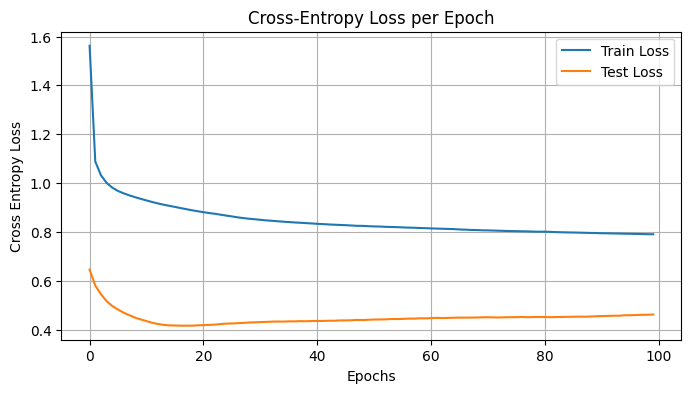
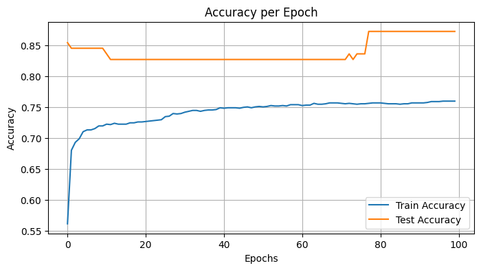
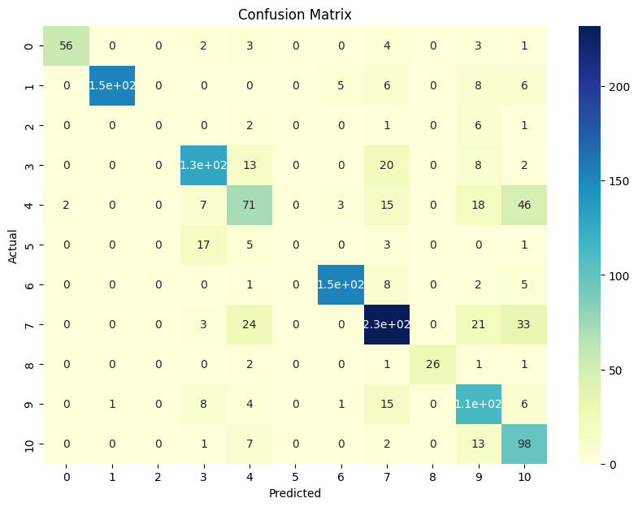

PyTorch Classifier Benchmark#
This is a basic implementation of a deep learning architecture using PyTorch in python3.10.
This is meant to be a sandbox for Pytorch wizards to build on top of.
Nevertheless, here we describe the following MLP:
Input -> Hidden Layer 1 -> Activation -> Hidden Layer 2 -> Activation -> Output Layer
Load data#
Show code cell source
import pandas as pd
input_path = '../Data/Intermediate_Files/'
output_path = '../Data/Processed_Data/'
# Load pacmap output data
df = pd.read_csv(output_path+'pacmap_output/pacmap_5d_output_acute_leukemia.csv', index_col=0)
Preprocess data#
Exclude categories with <10 samples#
Show code cell source
# exclude the samples with mixed phenotypes and Down syndrome and t(9;22)(q34.1;q11.2)/BCR::ABL1
df = df[~df['ELN AML 2022 Diagnosis'].isin(['Mixed phenotype acute leukemia T/myeloid',
'Myeloid leukaemia associated with Down syndrome',
'AML with t(9;22)(q34.1;q11.2)/BCR::ABL1'])]
df['ELN AML 2022 Diagnosis'].value_counts()
ELN AML 2022 Diagnosis
AML with t(9;11)(p22;q23.3)/KMT2A-rearrangement 360
AML with inv(16)(p13.1q22) or t(16;16)(p13.1;q22)/CBFB::MYH11 201
AML with t(8;21)(q22;q22.1)/RUNX1::RUNX1T1 198
AML with other rare recurring translocations 172
AML with mutated NPM1 172
MDS-related or secondary myeloid neoplasms 148
Otherwise-Normal Control 121
AML with in-frame bZIP mutated CEBPA 69
APL with t(15;17)(q24.1;q21.2)/PML::RARA 31
AML with t(6;9)(p23;q34.1)/DEK::NUP214 27
AML with inv(3)(q21.3q26.2) or t(3;3)(q21.3;q26.2)/MECOM-rearrangement 10
Name: count, dtype: int64
Exclude samples with missing labels#
Show code cell source
# drop the samples with missing labels for the ELN AML 2022 Diagnosis
df = df[~df['ELN AML 2022 Diagnosis'].isna()]
Define X and y#
Show code cell source
# Define X and y
X = df[['PaCMAP 1', 'PaCMAP 2', 'PaCMAP 3', 'PaCMAP 4', 'PaCMAP 5']].to_numpy() # shape (n_samples=1399, n_features=5)
y = df['ELN AML 2022 Diagnosis'].to_numpy() # shape (n_samples=1399,) with 11 string classes
Encode labels#
Show code cell source
# One hot encode the labels
from sklearn.preprocessing import LabelEncoder
from sklearn.preprocessing import OneHotEncoder
# Instantiate the LabelEncoder
label_encoder = LabelEncoder()
# The LabelEncoder converts each unique string value into a unique integer
# For example, if we had ['cat', 'dog', 'cat', 'bird'], it could become [0, 1, 0, 2]
# The specific integer assigned to each string is arbitrary
integer_encoded = label_encoder.fit_transform(y)
# Instantiate the OneHotEncoder
onehot_encoder = OneHotEncoder(sparse=False)
# The OneHotEncoder takes column-wise inputs, so we need to reshape our 1D array to be 2D
integer_encoded = integer_encoded.reshape(len(integer_encoded), 1)
# The OneHotEncoder converts each unique integer value into a unique one-hot vector
# For example, if we had [0, 1, 0, 2], it could become [[1, 0, 0], [0, 1, 0], [1, 0, 0], [0, 0, 1]]
# The i-th index is "hot" (1) while the others are "cold" (0)
y = onehot_encoder.fit_transform(integer_encoded)
/home/fmarchi/.local/lib/python3.10/site-packages/sklearn/preprocessing/_encoders.py:868: FutureWarning: `sparse` was renamed to `sparse_output` in version 1.2 and will be removed in 1.4. `sparse_output` is ignored unless you leave `sparse` to its default value.
warnings.warn(
Define model architecture#
Show code cell source
import torch
# Split the data into train/test sets based on the `Train Test` column
train_indices = df['Train Test'] == 'Discovery (train) Samples'
test_indices = df['Train Test'] == 'Validation (test) Samples'
# Convert numpy arrays into PyTorch tensors
X_train = torch.tensor(X[train_indices], dtype=torch.float32)
y_train = torch.tensor(y[train_indices], dtype=torch.float32)
X_test = torch.tensor(X[test_indices], dtype=torch.float32)
y_test = torch.tensor(y[test_indices], dtype=torch.float32)
Show code cell source
import torch.nn as nn
import torch.optim as optim
import numpy as np
import tqdm
import copy
class Multiclass(nn.Module):
def __init__(self, input_size=5, hidden_sizes=[10, 20],
output_size=11, activation=nn.ReLU()):
super().__init__()
self.layers = nn.ModuleList()
# Add input layer
self.layers.append(nn.Linear(input_size, hidden_sizes[0]))
# Add hidden layers
for k in range(len(hidden_sizes) - 1):
self.layers.append(activation)
self.layers.append(nn.Linear(hidden_sizes[k], hidden_sizes[k + 1]))
# Add output layer
self.layers.append(nn.Linear(hidden_sizes[-1], output_size))
def forward(self, x):
for layer in self.layers:
x = layer(x)
return x
# loss metric and optimizer
model = Multiclass()
loss_fn = nn.CrossEntropyLoss()
optimizer = optim.Adam(model.parameters(), lr=0.001)
# prepare model and training parameters
n_epochs = 100
batch_size = 5
batches_per_epoch = len(X_train) // batch_size
best_acc = - np.inf # init to negative infinity
best_weights = None
train_loss_hist = []
train_acc_hist = []
test_loss_hist = []
test_acc_hist = []
# training loop
for epoch in (range(n_epochs)):
epoch_loss = []
epoch_acc = []
# set model in training mode and run through each batch
model.train()
with tqdm.trange(batches_per_epoch, unit="batch", mininterval=0) as bar:
bar.set_description(f"Epoch {epoch}")
for i in bar:
# take a batch
start = i * batch_size
X_batch = X_train[start:start+batch_size]
y_batch = y_train[start:start+batch_size]
# forward pass
y_pred = model(X_batch)
loss = loss_fn(y_pred, y_batch)
# backward pass
optimizer.zero_grad()
loss.backward()
# update weights
optimizer.step()
# compute and store metrics
acc = (torch.argmax(y_pred, 1) == torch.argmax(y_batch, 1)).float().mean()
epoch_loss.append(float(loss))
epoch_acc.append(float(acc))
bar.set_postfix(
loss=float(loss),
acc=float(acc)
)
# set model in evaluation mode and run through the test set
model.eval()
y_pred = model(X_test)
ce = loss_fn(y_pred, y_test)
acc = (torch.argmax(y_pred, 1) == torch.argmax(y_test, 1)).float().mean()
ce = float(ce)
acc = float(acc)
train_loss_hist.append(np.mean(epoch_loss))
train_acc_hist.append(np.mean(epoch_acc))
test_loss_hist.append(ce)
test_acc_hist.append(acc)
if acc > best_acc:
best_acc = acc
best_weights = copy.deepcopy(model.state_dict())
print(f"Epoch {epoch} validation: Cross-entropy={ce:.2f}, Accuracy={acc*100:.1f}%")
# Restore best model
model.load_state_dict(best_weights)
Show code cell output
Epoch 0: 100%|██████████| 279/279 [00:00<00:00, 480.17batch/s, acc=0.4, loss=2.16]
Epoch 0 validation: Cross-entropy=0.65, Accuracy=85.5%
Epoch 1: 100%|██████████| 279/279 [00:00<00:00, 651.02batch/s, acc=0.4, loss=2.06]
Epoch 1 validation: Cross-entropy=0.58, Accuracy=84.5%
Epoch 2: 100%|██████████| 279/279 [00:00<00:00, 684.00batch/s, acc=0.4, loss=1.97]
Epoch 2 validation: Cross-entropy=0.55, Accuracy=84.5%
Epoch 3: 100%|██████████| 279/279 [00:00<00:00, 665.64batch/s, acc=0.4, loss=1.88]
Epoch 3 validation: Cross-entropy=0.52, Accuracy=84.5%
Epoch 4: 100%|██████████| 279/279 [00:00<00:00, 693.08batch/s, acc=0.4, loss=1.8]
Epoch 4 validation: Cross-entropy=0.50, Accuracy=84.5%
Epoch 5: 100%|██████████| 279/279 [00:00<00:00, 702.79batch/s, acc=0.4, loss=1.73]
Epoch 5 validation: Cross-entropy=0.48, Accuracy=84.5%
Epoch 6: 100%|██████████| 279/279 [00:00<00:00, 681.31batch/s, acc=0.4, loss=1.67]
Epoch 6 validation: Cross-entropy=0.47, Accuracy=84.5%
Epoch 7: 100%|██████████| 279/279 [00:00<00:00, 705.88batch/s, acc=0.4, loss=1.62]
Epoch 7 validation: Cross-entropy=0.46, Accuracy=84.5%
Epoch 8: 100%|██████████| 279/279 [00:00<00:00, 708.14batch/s, acc=0.4, loss=1.58]
Epoch 8 validation: Cross-entropy=0.45, Accuracy=84.5%
Epoch 9: 100%|██████████| 279/279 [00:00<00:00, 663.13batch/s, acc=0.4, loss=1.55]
Epoch 9 validation: Cross-entropy=0.44, Accuracy=84.5%
Epoch 10: 100%|██████████| 279/279 [00:00<00:00, 704.78batch/s, acc=0.4, loss=1.52]
Epoch 10 validation: Cross-entropy=0.43, Accuracy=83.6%
Epoch 11: 100%|██████████| 279/279 [00:00<00:00, 658.70batch/s, acc=0.4, loss=1.49]
Epoch 11 validation: Cross-entropy=0.43, Accuracy=82.7%
Epoch 12: 100%|██████████| 279/279 [00:00<00:00, 592.74batch/s, acc=0.2, loss=1.47]
Epoch 12 validation: Cross-entropy=0.42, Accuracy=82.7%
Epoch 13: 100%|██████████| 279/279 [00:00<00:00, 617.34batch/s, acc=0.2, loss=1.45]
Epoch 13 validation: Cross-entropy=0.42, Accuracy=82.7%
Epoch 14: 100%|██████████| 279/279 [00:00<00:00, 680.71batch/s, acc=0.2, loss=1.44]
Epoch 14 validation: Cross-entropy=0.42, Accuracy=82.7%
Epoch 15: 100%|██████████| 279/279 [00:00<00:00, 599.46batch/s, acc=0.2, loss=1.43]
Epoch 15 validation: Cross-entropy=0.42, Accuracy=82.7%
Epoch 16: 100%|██████████| 279/279 [00:00<00:00, 573.86batch/s, acc=0.2, loss=1.42]
Epoch 16 validation: Cross-entropy=0.42, Accuracy=82.7%
Epoch 17: 100%|██████████| 279/279 [00:00<00:00, 481.18batch/s, acc=0.2, loss=1.41]
Epoch 17 validation: Cross-entropy=0.42, Accuracy=82.7%
Epoch 18: 100%|██████████| 279/279 [00:00<00:00, 558.92batch/s, acc=0.2, loss=1.41]
Epoch 18 validation: Cross-entropy=0.42, Accuracy=82.7%
Epoch 19: 100%|██████████| 279/279 [00:00<00:00, 608.92batch/s, acc=0.2, loss=1.39]
Epoch 19 validation: Cross-entropy=0.42, Accuracy=82.7%
Epoch 20: 100%|██████████| 279/279 [00:00<00:00, 645.18batch/s, acc=0.2, loss=1.37]
Epoch 20 validation: Cross-entropy=0.42, Accuracy=82.7%
Epoch 21: 100%|██████████| 279/279 [00:00<00:00, 676.10batch/s, acc=0.2, loss=1.36]
Epoch 21 validation: Cross-entropy=0.42, Accuracy=82.7%
Epoch 22: 100%|██████████| 279/279 [00:00<00:00, 669.53batch/s, acc=0.2, loss=1.36]
Epoch 22 validation: Cross-entropy=0.42, Accuracy=82.7%
Epoch 23: 100%|██████████| 279/279 [00:00<00:00, 657.96batch/s, acc=0.2, loss=1.32]
Epoch 23 validation: Cross-entropy=0.42, Accuracy=82.7%
Epoch 24: 100%|██████████| 279/279 [00:00<00:00, 666.84batch/s, acc=0.2, loss=1.3]
Epoch 24 validation: Cross-entropy=0.42, Accuracy=82.7%
Epoch 25: 100%|██████████| 279/279 [00:00<00:00, 660.64batch/s, acc=0.4, loss=1.27]
Epoch 25 validation: Cross-entropy=0.43, Accuracy=82.7%
Epoch 26: 100%|██████████| 279/279 [00:00<00:00, 689.98batch/s, acc=0.4, loss=1.25]
Epoch 26 validation: Cross-entropy=0.43, Accuracy=82.7%
Epoch 27: 100%|██████████| 279/279 [00:00<00:00, 702.45batch/s, acc=0.4, loss=1.24]
Epoch 27 validation: Cross-entropy=0.43, Accuracy=82.7%
Epoch 28: 100%|██████████| 279/279 [00:00<00:00, 625.12batch/s, acc=0.4, loss=1.23]
Epoch 28 validation: Cross-entropy=0.43, Accuracy=82.7%
Epoch 29: 100%|██████████| 279/279 [00:00<00:00, 554.66batch/s, acc=0.4, loss=1.21]
Epoch 29 validation: Cross-entropy=0.43, Accuracy=82.7%
Epoch 30: 100%|██████████| 279/279 [00:00<00:00, 554.39batch/s, acc=0.4, loss=1.2]
Epoch 30 validation: Cross-entropy=0.43, Accuracy=82.7%
Epoch 31: 100%|██████████| 279/279 [00:00<00:00, 677.19batch/s, acc=0.4, loss=1.19]
Epoch 31 validation: Cross-entropy=0.43, Accuracy=82.7%
Epoch 32: 100%|██████████| 279/279 [00:00<00:00, 700.19batch/s, acc=0.4, loss=1.17]
Epoch 32 validation: Cross-entropy=0.43, Accuracy=82.7%
Epoch 33: 100%|██████████| 279/279 [00:00<00:00, 576.73batch/s, acc=0.4, loss=1.17]
Epoch 33 validation: Cross-entropy=0.43, Accuracy=82.7%
Epoch 34: 100%|██████████| 279/279 [00:00<00:00, 591.24batch/s, acc=0.4, loss=1.15]
Epoch 34 validation: Cross-entropy=0.43, Accuracy=82.7%
Epoch 35: 100%|██████████| 279/279 [00:00<00:00, 608.25batch/s, acc=0.4, loss=1.14]
Epoch 35 validation: Cross-entropy=0.43, Accuracy=82.7%
Epoch 36: 100%|██████████| 279/279 [00:00<00:00, 598.95batch/s, acc=0.4, loss=1.14]
Epoch 36 validation: Cross-entropy=0.43, Accuracy=82.7%
Epoch 37: 100%|██████████| 279/279 [00:00<00:00, 606.07batch/s, acc=0.4, loss=1.12]
Epoch 37 validation: Cross-entropy=0.44, Accuracy=82.7%
Epoch 38: 100%|██████████| 279/279 [00:00<00:00, 572.82batch/s, acc=0.4, loss=1.12]
Epoch 38 validation: Cross-entropy=0.43, Accuracy=82.7%
Epoch 39: 100%|██████████| 279/279 [00:00<00:00, 560.99batch/s, acc=0.4, loss=1.12]
Epoch 39 validation: Cross-entropy=0.44, Accuracy=82.7%
Epoch 40: 100%|██████████| 279/279 [00:00<00:00, 576.58batch/s, acc=0.4, loss=1.1]
Epoch 40 validation: Cross-entropy=0.44, Accuracy=82.7%
Epoch 41: 100%|██████████| 279/279 [00:00<00:00, 549.90batch/s, acc=0.4, loss=1.1]
Epoch 41 validation: Cross-entropy=0.44, Accuracy=82.7%
Epoch 42: 100%|██████████| 279/279 [00:00<00:00, 579.89batch/s, acc=0.6, loss=1.09]
Epoch 42 validation: Cross-entropy=0.44, Accuracy=82.7%
Epoch 43: 100%|██████████| 279/279 [00:00<00:00, 566.64batch/s, acc=0.6, loss=1.08]
Epoch 43 validation: Cross-entropy=0.44, Accuracy=82.7%
Epoch 44: 100%|██████████| 279/279 [00:00<00:00, 563.72batch/s, acc=0.6, loss=1.07]
Epoch 44 validation: Cross-entropy=0.44, Accuracy=82.7%
Epoch 45: 100%|██████████| 279/279 [00:00<00:00, 565.02batch/s, acc=0.6, loss=1.06]
Epoch 45 validation: Cross-entropy=0.44, Accuracy=82.7%
Epoch 46: 100%|██████████| 279/279 [00:00<00:00, 555.50batch/s, acc=0.6, loss=1.06]
Epoch 46 validation: Cross-entropy=0.44, Accuracy=82.7%
Epoch 47: 100%|██████████| 279/279 [00:00<00:00, 556.12batch/s, acc=0.6, loss=1.06]
Epoch 47 validation: Cross-entropy=0.44, Accuracy=82.7%
Epoch 48: 100%|██████████| 279/279 [00:00<00:00, 558.99batch/s, acc=0.6, loss=1.04]
Epoch 48 validation: Cross-entropy=0.44, Accuracy=82.7%
Epoch 49: 100%|██████████| 279/279 [00:00<00:00, 561.69batch/s, acc=0.6, loss=1.04]
Epoch 49 validation: Cross-entropy=0.44, Accuracy=82.7%
Epoch 50: 100%|██████████| 279/279 [00:00<00:00, 562.00batch/s, acc=0.6, loss=1.04]
Epoch 50 validation: Cross-entropy=0.44, Accuracy=82.7%
Epoch 51: 100%|██████████| 279/279 [00:00<00:00, 560.62batch/s, acc=0.6, loss=1.03]
Epoch 51 validation: Cross-entropy=0.44, Accuracy=82.7%
Epoch 52: 100%|██████████| 279/279 [00:00<00:00, 564.23batch/s, acc=0.6, loss=1.03]
Epoch 52 validation: Cross-entropy=0.44, Accuracy=82.7%
Epoch 53: 100%|██████████| 279/279 [00:00<00:00, 559.37batch/s, acc=0.6, loss=1.02]
Epoch 53 validation: Cross-entropy=0.44, Accuracy=82.7%
Epoch 54: 100%|██████████| 279/279 [00:00<00:00, 572.43batch/s, acc=0.6, loss=1.02]
Epoch 54 validation: Cross-entropy=0.44, Accuracy=82.7%
Epoch 55: 100%|██████████| 279/279 [00:00<00:00, 570.09batch/s, acc=0.6, loss=1.02]
Epoch 55 validation: Cross-entropy=0.44, Accuracy=82.7%
Epoch 56: 100%|██████████| 279/279 [00:00<00:00, 547.56batch/s, acc=0.6, loss=1.01]
Epoch 56 validation: Cross-entropy=0.45, Accuracy=82.7%
Epoch 57: 100%|██████████| 279/279 [00:00<00:00, 549.49batch/s, acc=0.6, loss=1]
Epoch 57 validation: Cross-entropy=0.45, Accuracy=82.7%
Epoch 58: 100%|██████████| 279/279 [00:00<00:00, 555.71batch/s, acc=0.6, loss=0.999]
Epoch 58 validation: Cross-entropy=0.45, Accuracy=82.7%
Epoch 59: 100%|██████████| 279/279 [00:00<00:00, 554.20batch/s, acc=0.6, loss=0.993]
Epoch 59 validation: Cross-entropy=0.45, Accuracy=82.7%
Epoch 60: 100%|██████████| 279/279 [00:00<00:00, 594.50batch/s, acc=0.6, loss=0.988]
Epoch 60 validation: Cross-entropy=0.45, Accuracy=82.7%
Epoch 61: 100%|██████████| 279/279 [00:00<00:00, 590.29batch/s, acc=0.6, loss=0.984]
Epoch 61 validation: Cross-entropy=0.45, Accuracy=82.7%
Epoch 62: 100%|██████████| 279/279 [00:00<00:00, 610.14batch/s, acc=0.6, loss=0.978]
Epoch 62 validation: Cross-entropy=0.45, Accuracy=82.7%
Epoch 63: 100%|██████████| 279/279 [00:00<00:00, 579.75batch/s, acc=0.6, loss=0.974]
Epoch 63 validation: Cross-entropy=0.45, Accuracy=82.7%
Epoch 64: 100%|██████████| 279/279 [00:00<00:00, 551.75batch/s, acc=0.6, loss=0.969]
Epoch 64 validation: Cross-entropy=0.45, Accuracy=82.7%
Epoch 65: 100%|██████████| 279/279 [00:00<00:00, 560.96batch/s, acc=0.6, loss=0.966]
Epoch 65 validation: Cross-entropy=0.45, Accuracy=82.7%
Epoch 66: 100%|██████████| 279/279 [00:00<00:00, 562.02batch/s, acc=0.6, loss=0.96]
Epoch 66 validation: Cross-entropy=0.45, Accuracy=82.7%
Epoch 67: 100%|██████████| 279/279 [00:00<00:00, 561.21batch/s, acc=0.6, loss=0.955]
Epoch 67 validation: Cross-entropy=0.45, Accuracy=82.7%
Epoch 68: 100%|██████████| 279/279 [00:00<00:00, 560.97batch/s, acc=0.6, loss=0.949]
Epoch 68 validation: Cross-entropy=0.45, Accuracy=82.7%
Epoch 69: 100%|██████████| 279/279 [00:00<00:00, 570.75batch/s, acc=0.6, loss=0.946]
Epoch 69 validation: Cross-entropy=0.45, Accuracy=82.7%
Epoch 70: 100%|██████████| 279/279 [00:00<00:00, 583.84batch/s, acc=0.6, loss=0.941]
Epoch 70 validation: Cross-entropy=0.45, Accuracy=82.7%
Epoch 71: 100%|██████████| 279/279 [00:00<00:00, 545.81batch/s, acc=0.6, loss=0.94]
Epoch 71 validation: Cross-entropy=0.45, Accuracy=82.7%
Epoch 72: 100%|██████████| 279/279 [00:00<00:00, 567.81batch/s, acc=0.6, loss=0.936]
Epoch 72 validation: Cross-entropy=0.45, Accuracy=83.6%
Epoch 73: 100%|██████████| 279/279 [00:00<00:00, 556.51batch/s, acc=0.6, loss=0.935]
Epoch 73 validation: Cross-entropy=0.45, Accuracy=82.7%
Epoch 74: 100%|██████████| 279/279 [00:00<00:00, 555.46batch/s, acc=0.6, loss=0.931]
Epoch 74 validation: Cross-entropy=0.45, Accuracy=83.6%
Epoch 75: 100%|██████████| 279/279 [00:00<00:00, 571.36batch/s, acc=0.6, loss=0.931]
Epoch 75 validation: Cross-entropy=0.45, Accuracy=83.6%
Epoch 76: 100%|██████████| 279/279 [00:00<00:00, 579.01batch/s, acc=0.6, loss=0.93]
Epoch 76 validation: Cross-entropy=0.45, Accuracy=83.6%
Epoch 77: 100%|██████████| 279/279 [00:00<00:00, 557.20batch/s, acc=0.6, loss=0.926]
Epoch 77 validation: Cross-entropy=0.45, Accuracy=87.3%
Epoch 78: 100%|██████████| 279/279 [00:00<00:00, 518.04batch/s, acc=0.6, loss=0.925]
Epoch 78 validation: Cross-entropy=0.45, Accuracy=87.3%
Epoch 79: 100%|██████████| 279/279 [00:00<00:00, 540.65batch/s, acc=0.6, loss=0.925]
Epoch 79 validation: Cross-entropy=0.45, Accuracy=87.3%
Epoch 80: 100%|██████████| 279/279 [00:00<00:00, 507.77batch/s, acc=0.6, loss=0.924]
Epoch 80 validation: Cross-entropy=0.45, Accuracy=87.3%
Epoch 81: 100%|██████████| 279/279 [00:00<00:00, 547.10batch/s, acc=0.6, loss=0.921]
Epoch 81 validation: Cross-entropy=0.45, Accuracy=87.3%
Epoch 82: 100%|██████████| 279/279 [00:00<00:00, 539.85batch/s, acc=0.6, loss=0.921]
Epoch 82 validation: Cross-entropy=0.45, Accuracy=87.3%
Epoch 83: 100%|██████████| 279/279 [00:00<00:00, 552.53batch/s, acc=0.6, loss=0.921]
Epoch 83 validation: Cross-entropy=0.45, Accuracy=87.3%
Epoch 84: 100%|██████████| 279/279 [00:00<00:00, 538.57batch/s, acc=0.6, loss=0.923]
Epoch 84 validation: Cross-entropy=0.45, Accuracy=87.3%
Epoch 85: 100%|██████████| 279/279 [00:00<00:00, 564.98batch/s, acc=0.6, loss=0.923]
Epoch 85 validation: Cross-entropy=0.45, Accuracy=87.3%
Epoch 86: 100%|██████████| 279/279 [00:00<00:00, 582.71batch/s, acc=0.6, loss=0.923]
Epoch 86 validation: Cross-entropy=0.45, Accuracy=87.3%
Epoch 87: 100%|██████████| 279/279 [00:00<00:00, 570.07batch/s, acc=0.6, loss=0.924]
Epoch 87 validation: Cross-entropy=0.45, Accuracy=87.3%
Epoch 88: 100%|██████████| 279/279 [00:00<00:00, 525.69batch/s, acc=0.6, loss=0.923]
Epoch 88 validation: Cross-entropy=0.45, Accuracy=87.3%
Epoch 89: 100%|██████████| 279/279 [00:00<00:00, 539.69batch/s, acc=0.6, loss=0.923]
Epoch 89 validation: Cross-entropy=0.46, Accuracy=87.3%
Epoch 90: 100%|██████████| 279/279 [00:00<00:00, 572.44batch/s, acc=0.6, loss=0.923]
Epoch 90 validation: Cross-entropy=0.46, Accuracy=87.3%
Epoch 91: 100%|██████████| 279/279 [00:00<00:00, 556.88batch/s, acc=0.6, loss=0.924]
Epoch 91 validation: Cross-entropy=0.46, Accuracy=87.3%
Epoch 92: 100%|██████████| 279/279 [00:00<00:00, 558.47batch/s, acc=0.6, loss=0.923]
Epoch 92 validation: Cross-entropy=0.46, Accuracy=87.3%
Epoch 93: 100%|██████████| 279/279 [00:00<00:00, 556.46batch/s, acc=0.6, loss=0.926]
Epoch 93 validation: Cross-entropy=0.46, Accuracy=87.3%
Epoch 94: 100%|██████████| 279/279 [00:00<00:00, 571.31batch/s, acc=0.6, loss=0.926]
Epoch 94 validation: Cross-entropy=0.46, Accuracy=87.3%
Epoch 95: 100%|██████████| 279/279 [00:00<00:00, 555.42batch/s, acc=0.6, loss=0.929]
Epoch 95 validation: Cross-entropy=0.46, Accuracy=87.3%
Epoch 96: 100%|██████████| 279/279 [00:00<00:00, 539.74batch/s, acc=0.6, loss=0.927]
Epoch 96 validation: Cross-entropy=0.46, Accuracy=87.3%
Epoch 97: 100%|██████████| 279/279 [00:00<00:00, 532.53batch/s, acc=0.6, loss=0.927]
Epoch 97 validation: Cross-entropy=0.46, Accuracy=87.3%
Epoch 98: 100%|██████████| 279/279 [00:00<00:00, 521.84batch/s, acc=0.6, loss=0.928]
Epoch 98 validation: Cross-entropy=0.46, Accuracy=87.3%
Epoch 99: 100%|██████████| 279/279 [00:00<00:00, 550.98batch/s, acc=0.6, loss=0.928]
Epoch 99 validation: Cross-entropy=0.46, Accuracy=87.3%
<All keys matched successfully>
Plot model performance#
Show code cell source
import matplotlib.pyplot as plt
import seaborn as sns
import pandas as pd
from sklearn.metrics import confusion_matrix
# Plotting the Cross-Entropy Loss
plt.figure(figsize=(8, 4))
plt.plot(train_loss_hist, label="Train Loss")
plt.plot(test_loss_hist, label="Test Loss")
plt.title("Cross-Entropy Loss per Epoch")
plt.xlabel("Epochs")
plt.ylabel("Cross Entropy Loss")
plt.legend()
plt.grid(True)
plt.show()
# Plotting the Accuracy
plt.figure(figsize=(8, 4))
plt.plot(train_acc_hist, label="Train Accuracy")
plt.plot(test_acc_hist, label="Test Accuracy")
plt.title("Accuracy per Epoch")
plt.xlabel("Epochs")
plt.ylabel("Accuracy")
plt.legend()
plt.grid(True)
plt.show()


Confusion matrices#
import seaborn as sns
import matplotlib.pyplot as plt
import pandas as pd
from sklearn.metrics import confusion_matrix
import torch
def plot_confusion_matrix(y_true, y_pred, output_size):
model.eval()
_, y_pred = torch.max(model(y_pred), 1)
conf_mat = confusion_matrix(y_true.numpy(), y_pred.numpy())
df_cm = pd.DataFrame(conf_mat, index=[i for i in range(output_size)],
columns=[i for i in range(output_size)])
plt.figure(figsize=(10, 7))
sns.heatmap(df_cm, annot=True, cmap="YlGnBu")
plt.title('Confusion Matrix')
plt.xlabel('Predicted')
plt.ylabel('Actual')
plt.show()
output_sizes = [11, 7] # Replace with actual output sizes if different
data = [(y_train, X_train), (y_test, X_test)] # Your data tuples here
for i in range(2):
_, y_true = torch.max(data[i][0], 1)
plot_confusion_matrix(y_true, data[i][1], output_sizes[i])

---------------------------------------------------------------------------
ValueError Traceback (most recent call last)
Cell In[9], line 25
23 for i in range(2):
24 _, y_true = torch.max(data[i][0], 1)
---> 25 plot_confusion_matrix(y_true, data[i][1], output_sizes[i])
Cell In[9], line 11, in plot_confusion_matrix(y_true, y_pred, output_size)
9 _, y_pred = torch.max(model(y_pred), 1)
10 conf_mat = confusion_matrix(y_true.numpy(), y_pred.numpy())
---> 11 df_cm = pd.DataFrame(conf_mat, index=[i for i in range(output_size)],
12 columns=[i for i in range(output_size)])
13 plt.figure(figsize=(10, 7))
14 sns.heatmap(df_cm, annot=True, cmap="YlGnBu")
File ~/.local/lib/python3.10/site-packages/pandas/core/frame.py:758, in DataFrame.__init__(self, data, index, columns, dtype, copy)
747 mgr = dict_to_mgr(
748 # error: Item "ndarray" of "Union[ndarray, Series, Index]" has no
749 # attribute "name"
(...)
755 copy=_copy,
756 )
757 else:
--> 758 mgr = ndarray_to_mgr(
759 data,
760 index,
761 columns,
762 dtype=dtype,
763 copy=copy,
764 typ=manager,
765 )
767 # For data is list-like, or Iterable (will consume into list)
768 elif is_list_like(data):
File ~/.local/lib/python3.10/site-packages/pandas/core/internals/construction.py:337, in ndarray_to_mgr(values, index, columns, dtype, copy, typ)
332 # _prep_ndarraylike ensures that values.ndim == 2 at this point
333 index, columns = _get_axes(
334 values.shape[0], values.shape[1], index=index, columns=columns
335 )
--> 337 _check_values_indices_shape_match(values, index, columns)
339 if typ == "array":
340 if issubclass(values.dtype.type, str):
File ~/.local/lib/python3.10/site-packages/pandas/core/internals/construction.py:408, in _check_values_indices_shape_match(values, index, columns)
406 passed = values.shape
407 implied = (len(index), len(columns))
--> 408 raise ValueError(f"Shape of passed values is {passed}, indices imply {implied}")
ValueError: Shape of passed values is (9, 9), indices imply (7, 7)
Show code cell source
# Convert one-hot encoded targets back to class labels
_, y_train_labels = torch.max(y_train, 1)
# Define the number of classes (replace 11 with the actual number if different)
output_size = 11
# Compute the confusion matrix
model.eval()
y_pred = model(X_train)
_, y_pred = torch.max(y_pred, 1)
conf_mat = confusion_matrix(y_train_labels.numpy(), y_pred.numpy())
df_cm = pd.DataFrame(conf_mat, index = [i for i in range(output_size)],
columns = [i for i in range(output_size)])
# Plot the confusion matrix
plt.figure(figsize = (10,7))
sns.heatmap(df_cm, annot=True, cmap="YlGnBu")
plt.title('Confusion Matrix')
plt.xlabel('Predicted')
plt.ylabel('Actual')
plt.show()
# Convert one-hot encoded targets back to class labels
_, y_test_labels = torch.max(y_test, 1)
# Define the number of classes (replace 11 with the actual number if different)
output_size = 7
# Compute the confusion matrix
model.eval()
y_pred = model(X_test)
_, y_pred = torch.max(y_pred, 1)
conf_mat = confusion_matrix(y_test_labels.numpy(), y_pred.numpy())
df_cm = pd.DataFrame(conf_mat, index = [i for i in range(output_size)],
columns = [i for i in range(output_size)])
# Plot the confusion matrix
plt.figure(figsize = (10,7))
sns.heatmap(df_cm, annot=True, cmap="YlGnBu")
plt.title('Confusion Matrix')
plt.xlabel('Predicted')
plt.ylabel('Actual')
plt.show()
---------------------------------------------------------------------------
ValueError Traceback (most recent call last)
Cell In[10], line 32
29 _, y_pred = torch.max(y_pred, 1)
31 conf_mat = confusion_matrix(y_test_labels.numpy(), y_pred.numpy())
---> 32 df_cm = pd.DataFrame(conf_mat, index = [i for i in range(output_size)],
33 columns = [i for i in range(output_size)])
35 # Plot the confusion matrix
36 plt.figure(figsize = (10,7))
File ~/.local/lib/python3.10/site-packages/pandas/core/frame.py:758, in DataFrame.__init__(self, data, index, columns, dtype, copy)
747 mgr = dict_to_mgr(
748 # error: Item "ndarray" of "Union[ndarray, Series, Index]" has no
749 # attribute "name"
(...)
755 copy=_copy,
756 )
757 else:
--> 758 mgr = ndarray_to_mgr(
759 data,
760 index,
761 columns,
762 dtype=dtype,
763 copy=copy,
764 typ=manager,
765 )
767 # For data is list-like, or Iterable (will consume into list)
768 elif is_list_like(data):
File ~/.local/lib/python3.10/site-packages/pandas/core/internals/construction.py:337, in ndarray_to_mgr(values, index, columns, dtype, copy, typ)
332 # _prep_ndarraylike ensures that values.ndim == 2 at this point
333 index, columns = _get_axes(
334 values.shape[0], values.shape[1], index=index, columns=columns
335 )
--> 337 _check_values_indices_shape_match(values, index, columns)
339 if typ == "array":
340 if issubclass(values.dtype.type, str):
File ~/.local/lib/python3.10/site-packages/pandas/core/internals/construction.py:408, in _check_values_indices_shape_match(values, index, columns)
406 passed = values.shape
407 implied = (len(index), len(columns))
--> 408 raise ValueError(f"Shape of passed values is {passed}, indices imply {implied}")
ValueError: Shape of passed values is (9, 9), indices imply (7, 7)
Watermark#
Author: Francisco_Marchi@Lamba_Lab_UF
Python implementation: CPython
Python version : 3.10.6
IPython version : 8.14.0
numpy : 1.24.1
pandas : 2.0.2
torch : 2.0.1+cu118
sklearn : 1.2.2
seaborn : 0.12.2
matplotlib: 3.7.1
Compiler : GCC 11.3.0
OS : Linux
Release : 5.15.90.1-microsoft-standard-WSL2
Machine : x86_64
Processor : x86_64
CPU cores : 20
Architecture: 64bit